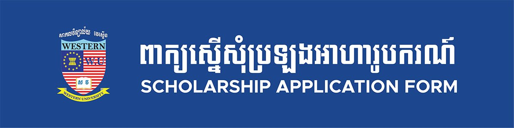

Western University was founded as a university by a sub-decree 72 on 17 November 2003 by its owner, Mr. Te Laurent. Mr. Laurent also started the Western International School in the same year. In 2005, with the approval of the Ministry of Education, Youth and Sport, a Western University branch was also established in Kompong Cham province. Mr. Laurent, the Rector of Western University, is a graduate of Economic Science in Finance and Banking from the University of Sorbonne, Paris, France. The University is continually fortifying its executive setup and academic processes to enable it to provide high-quality education in support of the human resource developments that Cambodia needs. To this end, it has embarked on a program to further improve the quality of its teaching to reach international standards.